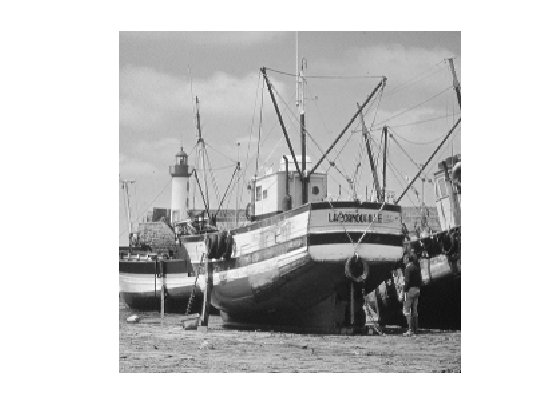
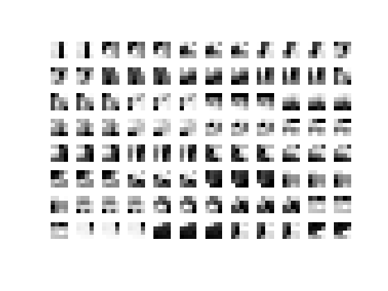
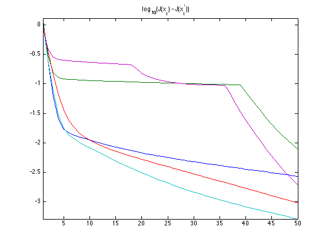
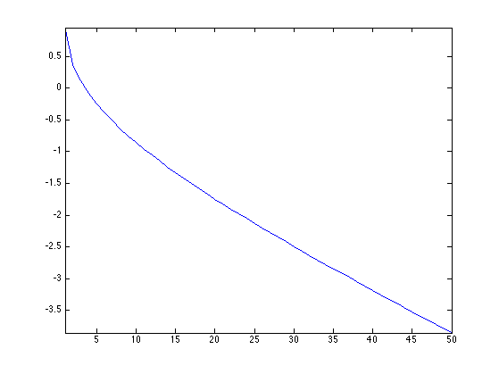

Dictionary Learning
Instead of using a fixed data representation such as wavelets or Fourier, one can learn the representation (the dictionary) to optimize the sparsity of the representation for a large class of exemplar.
Contents
Installing toolboxes and setting up the path.
You need to download the following files: signal toolbox and general toolbox.
You need to unzip these toolboxes in your working directory, so that you have toolbox_signal and toolbox_general in your directory.
For Scilab user: you must replace the Matlab comment '%' by its Scilab counterpart '//'.
Recommandation: You should create a text file named for instance numericaltour.sce (in Scilab) or numericaltour.m (in Matlab) to write all the Scilab/Matlab command you want to execute. Then, simply run exec('numericaltour.sce'); (in Scilab) or numericaltour; (in Matlab) to run the commands.
Execute this line only if you are using Matlab.
getd = @(p)path(p,path); % scilab users must *not* execute this
Then you can add the toolboxes to the path.
getd('toolbox_signal/'); getd('toolbox_general/');
Dictionary Learning as a Non-convex Optimization Problem
Given a set \(Y = (y_j)_{j=1}^m \in \RR^{n \times m} \) of \(m\) signals \(y_j \in \RR^m\), dictionary learning aims at finding the best dictionary \(D=(d_i)_{i=1}^p\) of \(p\) atoms \(d_i \in \RR^n\) to sparse code all the data.
In this numerical tour, we consider an application to image denoising, so that each \(y_j \in \RR^n\) is a patch of size \(n=w \times w\) extracted from the noisy image.
The idea of learning dictionaries to sparse code image patch was first proposed in:
Olshausen BA, and Field DJ., Emergence of Simple-Cell Receptive Field Properties by Learning a Sparse Code for Natural Images. Nature, 381: 607-609, 1996.
The sparse coding of a single data \(y=y_j\) for some \(j=1,\ldots,m\) is obtained by minimizing a \(\ell^0\) constrained optimization \[ \umin{ \norm{x}_0 \leq k } \frac{1}{2}\norm{y-Dx}^2 . \] where the \(\ell^0\) pseudo-norm of \(x \in \RR^p\) is \[ \norm{x}_0 = \abs{\enscond{i}{x(i) \neq 0}}. \]
The parameter \(k>0\) controls the amount of sparsity.
Dictionary learning performs an optimization both on the dictionary \(D\) and the set of coefficients \( X = (x_j)_{j=1}^m \in \RR^{p \times m} \) where, for \(j=1,\ldots,m\), \( x_j \) is the set of coefficients of the data \(y_j\). This joint optimization reads \[ \umin{ D \in \Dd, X \in \Xx_k } E(X,D) = \frac{1}{2}\norm{Y-DX}^2 = \frac{1}{2} \sum_{j=1}^m \norm{y_j - D x_j}^2. \]
The constraint set on \(D\) reads \[ \Dd = \enscond{D \in \RR^{n \times p} }{ \forall i=1,\ldots,p, \quad \norm{D_{\cdot,i}} \leq 1 }, \] (the columns of the dictionary are unit normalized). The sparsity constraint set on \(X\) reads \[ \Xx_k = \enscond{X \in \RR^{p \times m}}{ \forall j, \: \norm{X_{\cdot,j}}_0 \leq k }. \]
We propose to use a block-coordinate descent method to minimize \(E\): \[ X^{(\ell+1)} \in \uargmin{X \in \Xx_k} E(X,D^{(\ell)}), \] \[ D^{(\ell+1)} \in \uargmin{D \in \Dd} E(X^{(\ell+1)},D). \]
One can show the convergence of this minimization scheme, see for instance
P. Tseng, Convergence of Block Coordinate Descent Method for Nondifferentiable Minimization, J. Optim. Theory Appl., 109, 2001, 475-494.
We now define the parameter of the problem.
Width \(w\) of the patches.
if not(exist('w')) w = 10; end
Dimension \(n= w \times w\) of the data to be sparse coded.
n = w*w;
Number of atoms \(p\) in the dictionary.
p = 2*n;
Number \(m\) of patches used for the training.
m = 20*p;
Target sparsity \(k\).
k = 4;
Patch Extraction
Since the learning is computationnaly intensive, one can only apply it to small patches extracted from an image.
if not(exist('f')) f = rescale( crop(load_image('barb'),256) ); end n0 = size(f,1);
Display the input image.
clf; imageplot(clamp(f));
Random patch location.
q = 3*m; x = floor( rand(1,1,q)*(n0-w) )+1; y = floor( rand(1,1,q)*(n0-w) )+1;
Extract lots of patches \(y_j \in \RR^n\), and store them in a matrix \(Y=(y_j)_{j=1}^m\).
[dY,dX] = meshgrid(0:w-1,0:w-1); Xp = repmat(dX,[1 1 q]) + repmat(x, [w w 1]); Yp = repmat(dY,[1 1 q]) + repmat(y, [w w 1]); Y = f(Xp+(Yp-1)*n0); Y = reshape(Y, [n q]);
We remove the mean, since we are going to learn a dictionary of zero-mean and unit norm atom.
Y = Y - repmat( mean(Y), [n 1] );
Only keep those with largest energy.
[tmp,I] = sort(sum(Y.^2), 'descend');
Y = Y(:,I(1:m));
We consider a dictionary \(D \in \RR^{n \times p} \) of \(p \geq n\) atoms in \(\RR^n\). The initial dictionary \(D\) is computed by a random selection of patches, and we normalize them to be unit-norm.
ProjC = @(D)D ./ repmat( sqrt(sum(D.^2)), [w^2, 1] ); sel = randperm(m); sel = sel(1:p); D0 = ProjC( Y(:,sel) ); D = D0;
Display the initial dictionary.
clf; plot_dictionnary(D, [], [8 12]);
Update of the Coefficients \(X\)
The optimization on the coefficients \(X\) requires, for each \(y_j = Y_{\cdot,j}\) to compute \(x_j = X_{\cdot,j}\) that solves \[ \umin{ \norm{x_j}_0 \leq k } \frac{1}{2} \norm{y-D x_j}^2. \]
This is a non-smooth and non-convex minimization, that can be shown to be NP-hard. A heuristic to solve this method is to compute a stationary point of the energy using the Foward-Backward iterative scheme (projected gradient descent): \[ x_j \leftarrow \text{Proj}_{\Xx_k}\pa{ x_j - \tau D^* ( D x_j - y ) } \qwhereq \tau < \frac{2}{\norm{D D^*}}. \]
Denoting \(\abs{\bar x(1)} \leq \ldots \leq \abs{\bar x(n)}\) the ordered magnitudes of a vector \( x \in \RR^n \), the orthogonal projector on \(\Xx_k\) reads \(z = \text{Proj}_{\Xx_k}(x)\) with \[ \forall i=1,\ldots,n, \quad z(i) = \choice{ x(i) \qifq \abs{x(i)} \geq \abs{\bar x(k)}, \\ z(i) = 0 \quad \text{otherwise}. } \]
select = @(A,k)repmat(A(k,:), [size(A,1) 1]);
ProjX = @(X,k)X .* (abs(X) >= select(sort(abs(X), 'descend'),k));
Exercice 1: (check the solution) Perform the iterative hard thresholding, and display the decay of the energy \(J(x_j) = \norm{y_j-D x_j}^2\) for several \(j\). Remark: note that the iteration can be performed in parallel on all \(x_j\).
exo1;
Update the Dictionary \(D\)
Once the sparse coefficients \(X\) have been computed, one can udpate the dictionary. This is achieve by performing the minimization \[ \umin{D \in \Dd} \frac{1}{2}\norm{Y-D X}^2. \]
One can perform this minimization with a projected gradient descent \[ D \leftarrow \text{Proj}_{\Cc}\pa{ D - \tau (DX - Y)X^* } \] where \( \tau < 2/\norm{XX^*}. \)
Note that the orthogonal projector \(\text{Proj}_{\Cc}\) is implemented in the function ProjC already defined.
Exercice 2: (check the solution) Perform this gradient descent, and monitor the decay of the energy.
exo2;
Exercice 3: (check the solution) Perform the dictionary learning by iterating between sparse coding and dictionary update.
exo3;

Display the dictionary.
clf; plot_dictionnary(D,X, [8 12]);
Index exceeds matrix dimensions. Error in plot_dictionnary (line 69) vmax = max( max( abs( D(:,I(1:prod(nb))) ) ) ); Error in index (line 256) plot_dictionnary(D,X, [8 12]);